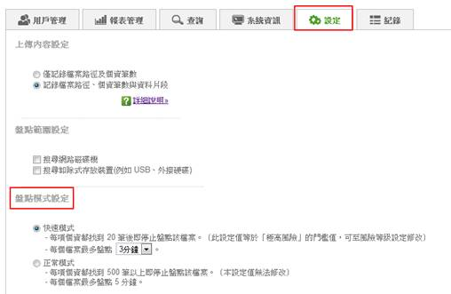
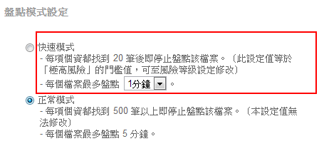

(1) 點選功能列中的設定按鈕。

(2) 在盤點模式設定中，可選擇要使用快速盤點模式，快速模式說明如下：
- 同一個檔案中，每種個資盤點到「極高風險」門檻設定值後就會停止盤點。例如目前極高風險的門檻值是 20 筆，假設一個檔案中含有姓名 1000 筆、身分證 500 筆，系統盤點姓名的第 20 筆後就會去盤點身分證，當身分證盤點到第 20 筆時就停止盤點該檔案，並開始盤下一個檔案。
- 管理者可以設定每個檔案的最長盤點時間。假設管理者設定一分鐘，當一個檔案盤點到一分鐘時，會停止盤點並開始盤點下一個檔案。

注意：設定完畢後，將套用到後續所有 Client 的盤點行為。